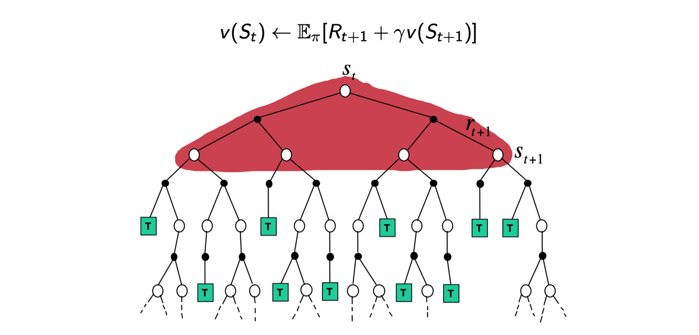
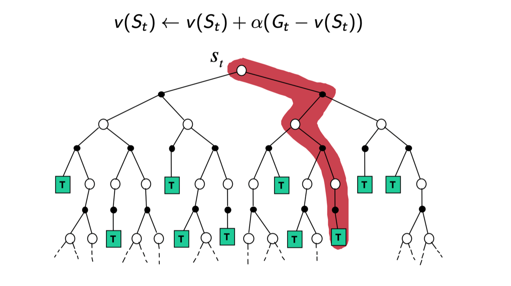
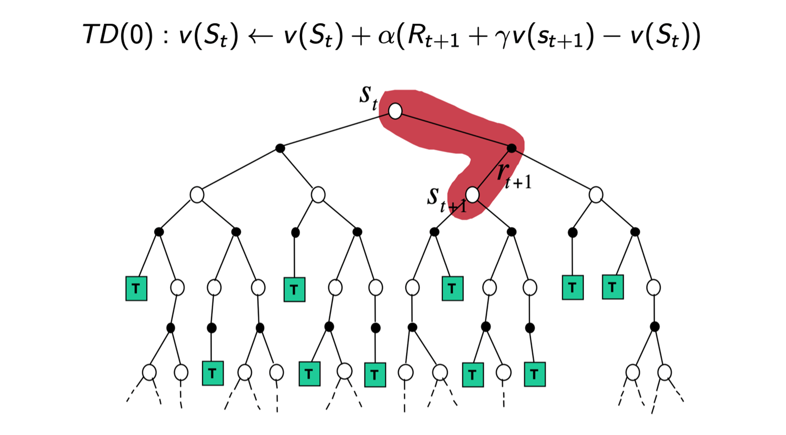
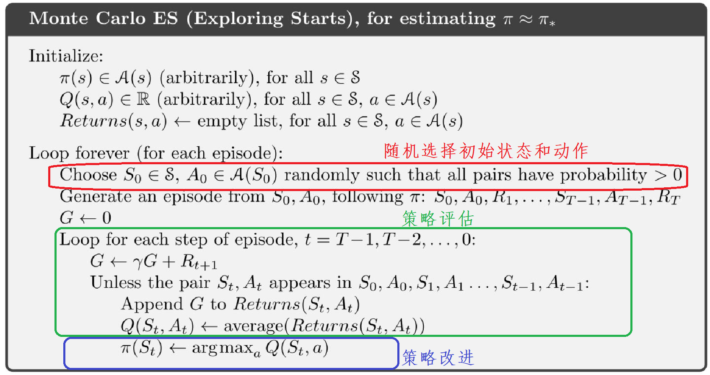
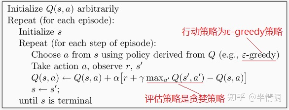
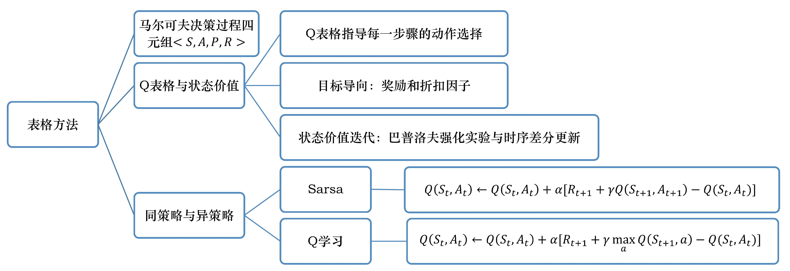

Q表格
上一章的马尔可夫决策过程说的是有模型情况下的预测和控制。这一章节的Q表格则是介绍了免模型情况下的预测和控制方法。
免模型预测
免模型说的是，不对环境的转移概率和奖励函数进行学习。
蒙特卡罗策略评估
上一章也简单介绍了蒙特卡罗策略评估的方法。简单来说就是对轨迹采样取平均作为期望值。下面会具体介绍。
一条轨迹的回报：
Gt=Rt+1+γRt+2+γ2Rt+3+...
状态价值是s状态以后的轨迹回报的期望：
vT(s)=Eτ∼π[Gt∣st=s]
增量式蒙特卡罗
均值可以写成增量形式的：
μn=n1j=1∑nxj=n1(xn+j=1∑n−1xj)=n1(xn+(n−1)μn−1)=μn−1+n1(xn−μn−1)
因此蒙特卡罗也可写成增量形式：
N(St) 表示计算St的价值采样的轨迹数量。
N(St)v(St)←N(St)+1←v(St)+N(St)1(Gt−v(St))
将N(St)1 换成α 作为学习率。因此最终的蒙特卡罗更新公式：
v(St)←v(St)+α(Gt−v(St))
时序差分
前面也提到过时序差分的方法，它结合了蒙特卡罗和动态规划的方法。在这一小节，会具体介绍它的工作方式。
时序差分的方法也是免模型的，不需要马尔可夫决策过程的状态转移概率和奖励函数。
V(s)=E[Gt∣St=s]=E[Rt+1+γRt+2+γ2Rt+3...∣St=s]=E[Rt+1+γ(Rt+2+γRt+3+..)∣St=s]=E[Rt+1+γVt+1(s′)∣St=s]
因此时序差分用Rt+1+γVt+1(s′) 来表示Gt:
Gt=Rt+1+γVt+1(s′)
代入到蒙特卡罗的更新公式中得到：
v(St)←v(St)+α(Rt+1+γv(St+1)−v(St))
也就是，实际上它的更新类似于蒙特卡罗，都是采样多条轨迹一次次更新，只是Gt的计算和蒙特卡罗不一样。
但是对比两种计算Gt 的方式：
MC:Gt=Rt+1+γRt+2+γ2Rt+3+...TD:Gt=Rt+1+γV(St+1)
可以观察到蒙特卡罗的方法必须等到一个trace完成才能计算回报，从而更新状态价值。而时序差分的方法则在第二步就可以更新之前的状态价值。
前面介绍的TD方法给出的是TD(1)的方法，也就是一步之后更新。但是几步是可以选择的
TD(1):Gt1TD(2):Gt2TD(3):Gt3....TD(∞):Gt∞=Rt+1+γV(St+1)=Rt+1+γRt+2+γ2V(St+2)=Rt+1+γRt+2+γ2Rt+3+γ3V(St+3)=Rt+1+γRt+2+γ2Rt+3+...
更新仍然采用：v(St)←v(St)+α(Gtn−v(St))
可见TD(∞) 退化成蒙特卡罗方法。也可以理解为蒙特卡罗方法是TD方法的特例。
动态规划、蒙特卡罗以及时序差分
自举：指的是在更新中采用了估计。
动态规划和时序差分都采用了自举，因为它们都是用了v函数的值，这是一个估计值。蒙塔克罗没有，它是直接利用真实回报计算的。
蒙特卡罗和时序差分都采用了采样。而动态规划没有。
动态规划是有模型方法，而蒙特卡罗和时序差分方法不是。



上图从左到右分别展示了动态规划，蒙特卡罗和时序差分的方法。
动态规划会考虑每一种情况将它们的估计值加和。
蒙特卡罗则是走完一条轨迹用真实的reward更新价值函数。
时序差分则是只走一步，用一步的reward和估计值来更新。
时序差分如果考虑了所有可能的下一步state（也就是广度）它就变成了动态规划问题。
时序差分如果无穷步后更新（也就是考虑了深度），它就变成了蒙特卡罗方法。
免模型控制
在这里将介绍能够兼容蒙特卡罗和时序差分方法的广义策略迭代。
在上一章的动态规划部分也介绍了策略迭代的方法。回顾动态规划有两种控制方法：策略迭代和值迭代。策略迭代是先评估后更新，评估采用动态规划的迭代的方法得到v函数。更新是选择当前状态下使得q函数最大的action。更新后再评估，再更新。。。值迭代是直接找到最好的v函数，再找到对应v函数的策略。
但是在这一章免模型的控制，我们只介绍了免模型下的策略迭代方法。
免模型的广义策略迭代同样包含两个步骤：
- 给当前的策略做评估，得到价值函数。
- 根据价值函数，通过贪心的方法改进策略。
之前的动态规划的策略迭代可以通过如下的方式进行：
qπ(s,a)=R(s,a)+γs′∈S∑P(s′∣s,a)vπi(s′)πi+i(s)=argamaxqπi(s,a)
但是由于是无模型的方法，我们不知道R(s,a) 和P(s′∣s,a)，因此我们要对评估的方式进行修改。也就是找到得到q函数的方式。
探索性初始化蒙特卡罗法
首先我们将介绍一种采用蒙特卡罗方法探索性初始化的估计q函数的方法：
它的算法如下：

其中:
- Gt=Rt+1+γRt+2+γ2Rt+3+..=Rt+1+γGt+1, 而GT=0，因此G的更新如算法中所示
- q函数是（s, a）的gain的期望，因此这里用均值来估计它。
- 用q函数找策略的方式和动态规划保持一致
- 总的来说，这里做的就是用MC来估计q函数。
ε-贪心蒙特卡罗算法
接下来介绍一种改进方法：ε-贪心的蒙特卡罗算法
和上一种方法的主要不同在于。它的策略的选择以1−ε的概率采用Q函数的最优action。以ε的概率采用随机的action。通过这种方式，这个算法可以有更强的探索性。
其中ε的值随着迭代的次数逐渐减小。因为后期的q函数选择的action更加可靠。
前面介绍的两种方式都是基于蒙特卡罗方法的，而相比起蒙特卡罗方法，时序差分的方法能够在线学习，能从不完整的序列中学习。因此可以将时序差分的方法也放到控制循环中。
Sarsa：同策略时序差分控制
同策略是指：策略评估和策略提升采用了相同的策略
异策略是指：策略评估和策略提升不一定采用相同的策略。比如之前的ε-贪婪算法
Sarsa实际上只是对时序差分控制的V换成了Q。
推导方式和V类似，结果：
Q(St,At)←Q(St,At)+α[Rt+1+γQ(St+1,At+1)−Q(St,At)]
Sarsa 就是用这个方式评估得到Q函数，再用这个Q函数找到当前的最优策略。用这个策略重新评估，重新找最优策略。。。
Q-learning：异策略时序差分控制
异策略在策略评估和策略提升时候采用不同的策略。因此异策略有两种不同的策略：目标策略和行为策略。
目标策略是我们要学习的策略。它的目的是不需要和环境交互就可以选择合适的策略。
行为策略是探索环境的策略。它的目的是从环境中学习到经验教给目标策略学习。
目标策略
策略直接在q函数上使用贪心的方法，取q值最大的action。
π(St+1)=arga′maxQ(St+1,a′)
行为策略
行为策略采用ε-贪心策略。有一定的随机性，从而可以做出探索。
由于目标策略是贪心策略，行为策略是ε-贪心策略，因此两者得到的策略不一定相同，也就是异策略的。
Q的更新采用了时序差分的方法。
完整过程：

Q-learning 与Sarsa唯一不同在于第二个红线处。sarsa在更新时候必须提前知道下一步的action，而q-learning由于选择的action不依赖于行为策略，因此可以直接计算。
同策略 vs 异策略
同策略算法用一个策略兼顾探索和利用，因此表现的比较胆小稳重。
异策略可以大胆利用行为策略去探索，再用目标策略选择最优策略，因此表现得比较激进。
总结
